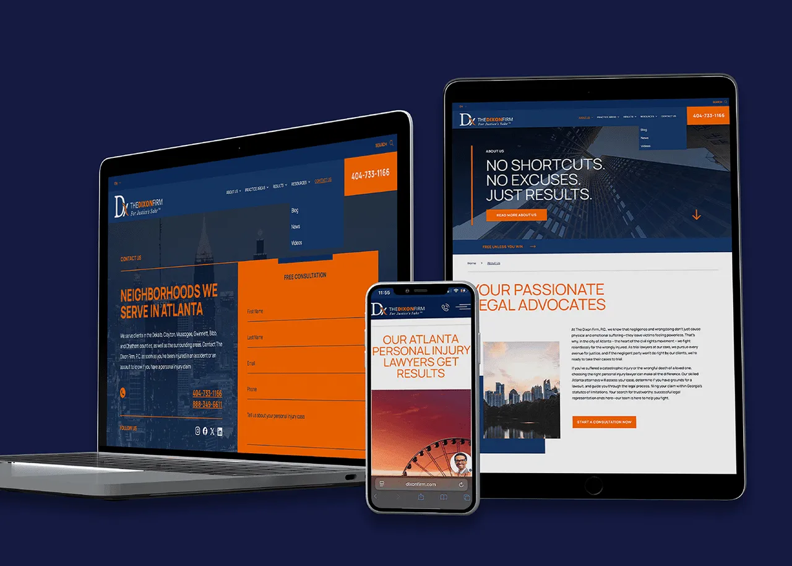

The landing page
graviodigital.com is a single-page sales mechanism: problem framing, offer stack (6 components + 2 bonuses), performance-based pricing (₦300k setup + ₦450k after 3 qualified leads), 90-day guarantee. Hand-coded HTML/CSS, no builder.
Own business · Live system
A complete client pipeline for Lagos law firms, from cold-call audit to signed engagement — built, fully operational, and live. The landing page is the front door; the system behind it is where the work happens.
Before
Gravio Digital is a Lagos-based agency that helps law firms convert inbound leads into paying clients. The brief was mine: build a business that sells web services to the same legal agencies I'm now applying to. A landing page alone wouldn't do that. The business needed a system: a way to identify firms, audit their sites, start conversations, and close engagements without a sales team.

Approach
“I started with the storefront, then built the machine behind it so the offer could evolve from a general agency into a specialized legal-focused practice.”
The decision was to treat the business itself as the project. Every component had to earn its place:
After: the live system
Below is a distilled view of the system. The landing page converts. The pipeline identifies and audits. The playbook guides conversations. Each component is operational, not a mockup.
graviodigital.com is a single-page sales mechanism: problem framing, offer stack (6 components + 2 bonuses), performance-based pricing (₦300k setup + ₦450k after 3 qualified leads), 90-day guarantee. Hand-coded HTML/CSS, no builder.
Python + Firecrawl + Playwright + Ollama (gemma4:31b). Maps each firm's site, selects relevant pages, captures screenshots, and produces scored JSON observations with wedge scores, evidence ladder placement, and conversation starters.
Observation-first framework: one observation, one consequence, one question, one next step. 11 delivery principles. Designed for Nigerian law firms, RPC-conscious. Earns the next conversation, not the close.
10 categories ranked by wedge strength. Contact & enquiry and trust & credibility at the top; technical performance and tone at the bottom. Every observation scored on 5 criteria: factual, visible, relevant, explainable, creates curiosity.
Implementation
main.py) — runs the audit with resumable state (state.json)gemma4:31b) for vision-based observation scoringLive proof: the landing page is live, and the back‑end has already audited 46 firms, generating 192 actionable observations.